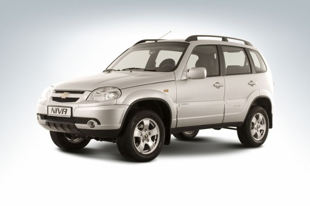
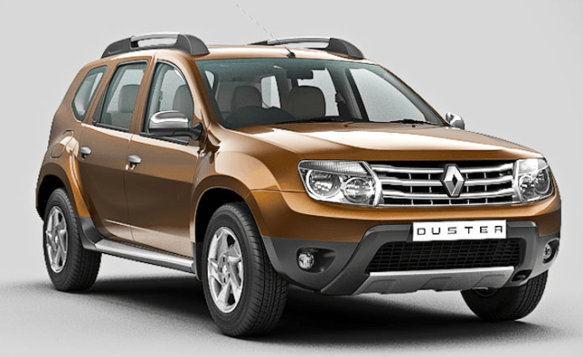
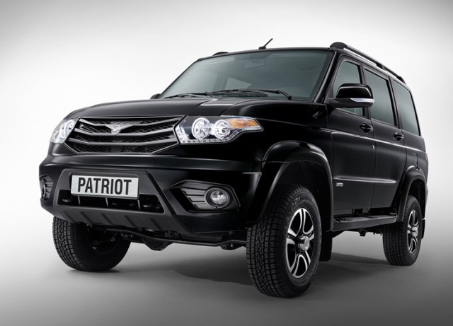

Найдешевші позашляховики в Україні
Позашляховик - зовсім не розкіш. В Україні дешевий позашляховик коштує приблизно стільки ж, як седан або хетчбек. Якщо у вас є 300 - 400 000 грн, то вам вистачить не тільки на китайський кросовер. Вибрати можна буде навіть європейський паркетник.
На сьогодні найдешевший варіант - це російські позашляховики, що вийшли з радянського автопрому. Правда, очевидно, скоро ціни на них виростуть, і суттєво. Україна вводить спеціальні податки на автомобілі, вироблені в Росії.
А тепер про кожен автомобіль докладно.
ТОП-3 найдешевших позашляховиків і кросоверів в Україні
- SHEVROLET NIVA
- RENAULT DUSTER
- УАЗ ПАТРІОТ
SHEVROLET NIVA (359 900 грн.)
- Дорожній просвіт: 200 мм
- Привід: повний
- Об'єм двигуна: 1,7 л.
- Паливо: бензин
- Потужність: 80 к.с.
RENAULT DUSTER (360 880 грн.)
- Дорожній просвіт: 205 мм
- Привід: передній
- Об'єм двигуна: 1,6 л.
- Паливо: бензин
- Потужність: 105 к.с.
УАЗ ПАТРІОТ (389 900 грн.)
- Дорожній просвіт: 210 мм
- Привід: повний
- Об'єм двигуна: 2,7 л.
- Паливо: бензин
- Потужність: 128 к.с.